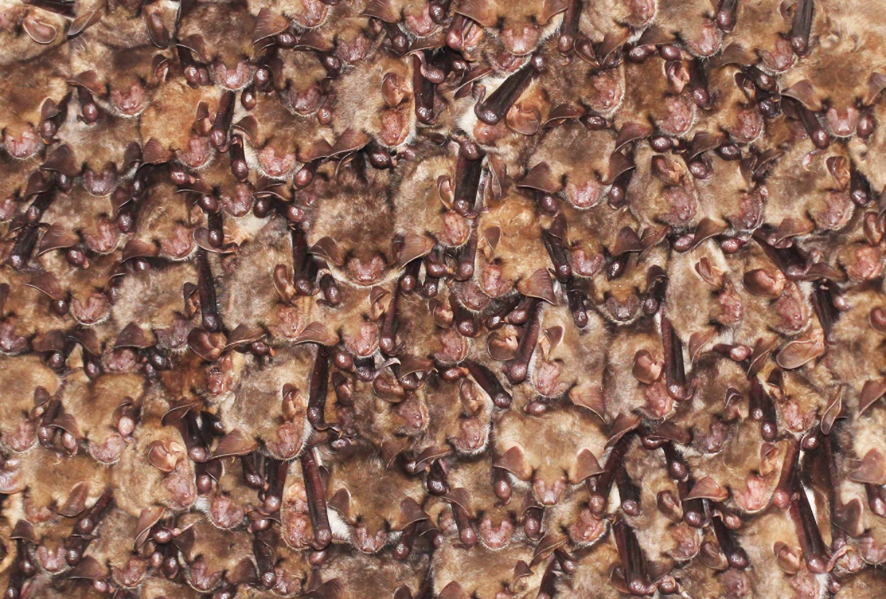

Foley, N.M., Petit, E.J., Brazier, T., Finarelli, J.A., Hughes, G.M., Touzalin, F., Puechmaille, S.J., Teeling, E.C., 2020. Drivers of longitudinal telomere dynamics in the long‐lived bat species, Myotis myotis. Mol Ecol mec.15395. https://doi.org/10.1111/mec.15395

Master's degree in Functional, Behavioral and Evolutionary Ecology, Rennes 1 University, 2019
Bachelor's degree in Biology of Organisms and Evolution, Paris VI UPMC/Aix-Marseille University, 2017
Master's degree of 'École Nationale Supérieure' of Cinema Louis Lumière, 2010
Bachelor's degree in Arts & Cinema, Paris X University, 2007
High School Diploma in Science, 2004
Inferring invasion pathways and source populations of the topmouth gudgeon (Pseudorasbora parva) in Europe with Machine Learning and Approximate Bayesian Computation, 2018.
Limited male dispersal and mating system in lesser horseshoe bats (Rhinolophus hipposideros): estimates from parentage assignment, 2017.
Teacher assistant in statistics and bioinformatics for bachelor and master's degrees.
Master's degree supervisor in evolutionary genomics.
Population Genetics, Genomics, Evolutionary Biology, Bayesian statistics, Bootstrap methods, Machine Learning, Parameter estimates by Maximum Likelihood and Bayesian procedures.
Informatic skills: R, Unix, Python.
Bioinformatic pipelines: Stacks for ddRADseq (Illumina).
Population genetics: adegenet, STRUCTURE, COLONY for parentage assignment, DIYABC, ms, msHOT, fastSimCoal2, SLiM.
Plants, Bats, Fishes, Aquatic Ecology, Entomology (especially beetles, butterflies and hymenoptera), Mycology.